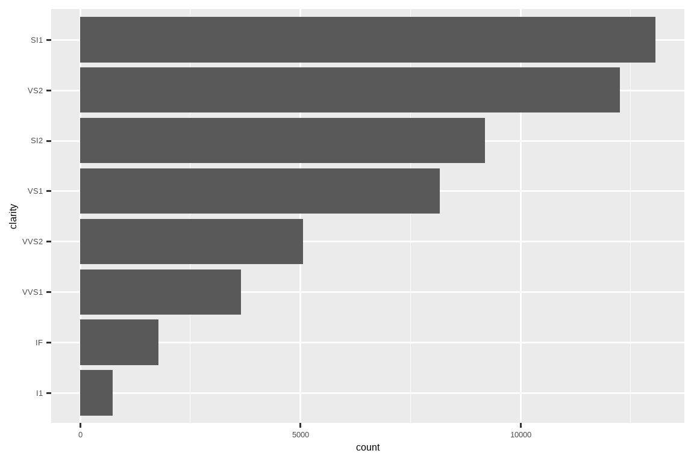

25 Functions
25.1 Introduction
One of the best ways to improve your reach as a data scientist is to write functions. Functions allow you to automate common tasks in a more powerful and general way than copy-and-pasting. Writing a function has four big advantages over using copy-and-paste:
作为一名数据科学家，编写函数是提升能力最好的方法之一。函数允许你以比复制粘贴更强大、更通用的方式来自动化常见任务。与复制粘贴相比，编写函数有四大优势：
You can give a function an evocative name that makes your code easier to understand.
你可以给函数起一个能唤起记忆的名称，使你的代码更容易理解。As requirements change, you only need to update code in one place, instead of many.
当需求变更时，你只需要在一个地方更新代码，而不是多个地方。You eliminate the chance of making incidental mistakes when you copy and paste (i.e. updating a variable name in one place, but not in another).
你消除了在复制粘贴时犯下偶然错误的机会（例如，在一个地方更新了变量名，但在另一个地方没有更新）。It makes it easier to reuse work from project-to-project, increasing your productivity over time.
这使得在项目之间重用工作变得更加容易，从而随着时间的推移提高你的生产力。
A good rule of thumb is to consider writing a function whenever you’ve copied and pasted a block of code more than twice (i.e. you now have three copies of the same code). In this chapter, you’ll learn about three useful types of functions:
一个好的经验法则是，当你复制粘贴一段代码超过两次（即你现在有三份相同的代码）时，就应该考虑编写一个函数。在本章中，你将学习三种有用的函数类型： Vector functions take one or more vectors as input and return a vector as output.
向量函数 (Vector functions) 将一个或多个向量作为输入，并返回一个向量作为输出。
Data frame functions take a data frame as input and return a data frame as output.
数据框函数 (Data frame functions) 将一个数据框作为输入，并返回一个数据框作为输出。Plot functions that take a data frame as input and return a plot as output.
绘图函数 (Plot functions) 将一个数据框作为输入，并返回一个图表作为输出。
Each of these sections includes many examples to help you generalize the patterns that you see. These examples wouldn’t be possible without the help of folks of twitter, and we encourage you to follow the links in the comments to see the original inspirations. You might also want to read the original motivating tweets for general functions and plotting functions to see even more functions.
这些部分中的每一个都包含许多示例，以帮助你归纳所看到的模式。没有 Twitter 上朋友们的帮助，这些示例是不可能完成的，我们鼓励你点击评论中的链接，查看最初的灵感来源。你可能还想阅读关于 通用函数 和 绘图函数 的原始推文，以看到更多函数。
25.1.1 Prerequisites
We’ll wrap up a variety of functions from around the tidyverse. We’ll also use nycflights13 as a source of familiar data to use our functions with.
我们将整合 tidyverse 中的各种函数。我们还将使用 nycflights13 作为我们熟悉的，用于函数处理的数据源。
25.2 Vector functions
We’ll begin with vector functions: functions that take one or more vectors and return a vector result. For example, take a look at this code. What does it do?
我们将从向量函数开始：即接受一个或多个向量并返回一个向量结果的函数。例如，看看这段代码。它是做什么的？
df <- tibble(
a = rnorm(5),
b = rnorm(5),
c = rnorm(5),
d = rnorm(5),
)
df |> mutate(
a = (a - min(a, na.rm = TRUE)) /
(max(a, na.rm = TRUE) - min(a, na.rm = TRUE)),
b = (b - min(a, na.rm = TRUE)) /
(max(b, na.rm = TRUE) - min(b, na.rm = TRUE)),
c = (c - min(c, na.rm = TRUE)) /
(max(c, na.rm = TRUE) - min(c, na.rm = TRUE)),
d = (d - min(d, na.rm = TRUE)) /
(max(d, na.rm = TRUE) - min(d, na.rm = TRUE)),
)
#> # A tibble: 5 × 4
#> a b c d
#> <dbl> <dbl> <dbl> <dbl>
#> 1 0.339 0.387 0.291 0
#> 2 0.880 -0.613 0.611 0.557
#> 3 0 -0.0833 1 0.752
#> 4 0.795 -0.0822 0 1
#> 5 1 -0.0952 0.580 0.394You might be able to puzzle out that this rescales each column to have a range from 0 to 1. But did you spot the mistake? When Hadley wrote this code he made an error when copying-and-pasting and forgot to change an a to a b. Preventing this type of mistake is one very good reason to learn how to write functions.
你或许能猜到这是将每一列重新缩放到 0 到 1 的范围。但你发现错误了吗？Hadley 在编写这段代码时，在复制粘贴时犯了一个错误，忘记将一个 a 改成 b。避免这类错误是学习编写函数的一个很好的理由。
25.2.1 Writing a function
To write a function you need to first analyse your repeated code to figure what parts are constant and what parts vary. If we take the code above and pull it outside of mutate(), it’s a little easier to see the pattern because each repetition is now one line:
要编写一个函数，你首先需要分析你重复的代码，找出哪些部分是常量，哪些部分是变量。如果我们把上面的代码从 mutate() 中抽离出来，模式会更容易看清，因为现在每次重复都只有一行：
To make this a bit clearer we can replace the bit that varies with █:
为了更清晰地说明，我们可以用 █ 替换变化的部分：
(█ - min(█, na.rm = TRUE)) / (max(█, na.rm = TRUE) - min(█, na.rm = TRUE))To turn this into a function you need three things:
要把这个变成一个函数，你需要三样东西：
A name. Here we’ll use
rescale01because this function rescales a vector to lie between 0 and 1.
一个名称。这里我们使用rescale01，因为这个函数将一个向量重新缩放到 0 和 1 之间。The arguments. The arguments are things that vary across calls and our analysis above tells us that we have just one. We’ll call it
xbecause this is the conventional name for a numeric vector.
参数。参数是每次调用中变化的东西，我们上面的分析告诉我们只有一个。我们称它为x，因为这是数值向量的常规名称。The body. The body is the code that’s repeated across all the calls.
函数体。函数体是所有调用中重复的代码。
Then you create a function by following the template:
然后你按照以下模板创建一个函数：
name <- function(arguments) {
body
}For this case that leads to:
对于这种情况，我们得到：
At this point you might test with a few simple inputs to make sure you’ve captured the logic correctly:
此时，你可能会用一些简单的输入来测试，以确保你已经正确地捕获了逻辑：
Then you can rewrite the call to mutate() as:
然后你可以将对 mutate() 的调用重写为：
df |> mutate(
a = rescale01(a),
b = rescale01(b),
c = rescale01(c),
d = rescale01(d),
)
#> # A tibble: 5 × 4
#> a b c d
#> <dbl> <dbl> <dbl> <dbl>
#> 1 0.339 1 0.291 0
#> 2 0.880 0 0.611 0.557
#> 3 0 0.530 1 0.752
#> 4 0.795 0.531 0 1
#> 5 1 0.518 0.580 0.394(In Chapter 26, you’ll learn how to use across() to reduce the duplication even further so all you need is df |> mutate(across(a:d, rescale01))).
（在 Chapter 26 中，你将学习如何使用 across() 来进一步减少重复，这样你只需要 df |> mutate(across(a:d, rescale01))）。
25.2.2 Improving our function
You might notice that the rescale01() function does some unnecessary work — instead of computing min() twice and max() once we could instead compute both the minimum and maximum in one step with range():
你可能会注意到 rescale01() 函数做了一些不必要的工作——与其计算两次 min() 和一次 max()，我们可以用 range() 一步计算出最小值和最大值：
rescale01 <- function(x) {
rng <- range(x, na.rm = TRUE)
(x - rng[1]) / (rng[2] - rng[1])
}Or you might try this function on a vector that includes an infinite value:
或者你可以在包含无穷大值的向量上尝试这个函数：
x <- c(1:10, Inf)
rescale01(x)
#> [1] 0 0 0 0 0 0 0 0 0 0 NaNThat result is not particularly useful so we could ask range() to ignore infinite values:
这个结果不是特别有用，所以我们可以让 range() 忽略无穷大值：
rescale01 <- function(x) {
rng <- range(x, na.rm = TRUE, finite = TRUE)
(x - rng[1]) / (rng[2] - rng[1])
}
rescale01(x)
#> [1] 0.0000000 0.1111111 0.2222222 0.3333333 0.4444444 0.5555556 0.6666667
#> [8] 0.7777778 0.8888889 1.0000000 InfThese changes illustrate an important benefit of functions: because we’ve moved the repeated code into a function, we only need to make the change in one place.
这些改变说明了函数的一个重要好处：因为我们已经将重复的代码移入了一个函数中，我们只需要在一个地方进行修改。
25.2.3 Mutate functions
Now that you’ve got the basic idea of functions, let’s take a look at a whole bunch of examples. We’ll start by looking at “mutate” functions, i.e. functions that work well inside of mutate() and filter() because they return an output of the same length as the input.
既然你已经掌握了函数的基本概念，让我们来看一大堆例子。我们将从“mutate”函数开始，即那些在 mutate() 和 filter() 中工作得很好的函数，因为它们返回的输出与输入长度相同。
Let’s start with a simple variation of rescale01(). Maybe you want to compute the Z-score, rescaling a vector to have a mean of zero and a standard deviation of one:
让我们从 rescale01() 的一个简单变体开始。也许你想要计算 Z-score，将一个向量重新缩放，使其均值为零，标准差为一：
Or maybe you want to wrap up a straightforward case_when() and give it a useful name. For example, this clamp() function ensures all values of a vector lie in between a minimum or a maximum:
或者，你可能想包装一个简单的 case_when() 并给它一个有用的名字。例如，这个 clamp() 函数确保向量的所有值都介于最小值和最大值之间：
clamp <- function(x, min, max) {
case_when(
x < min ~ min,
x > max ~ max,
.default = x
)
}
clamp(1:10, min = 3, max = 7)
#> [1] 3 3 3 4 5 6 7 7 7 7Of course functions don’t just need to work with numeric variables. You might want to do some repeated string manipulation. Maybe you need to make the first character upper case:
当然，函数不只适用于数值变量。你可能想做一些重复的字符串操作。也许你需要将第一个字符大写：
first_upper <- function(x) {
str_sub(x, 1, 1) <- str_to_upper(str_sub(x, 1, 1))
x
}
first_upper("hello")
#> [1] "Hello"Or maybe you want to strip percent signs, commas, and dollar signs from a string before converting it into a number:
或者，你可能想在将字符串转换为数字之前，去除其中的百分号、逗号和美元符号：
# https://twitter.com/NVlabormarket/status/1571939851922198530
clean_number <- function(x) {
is_pct <- str_detect(x, "%")
num <- x |>
str_remove_all("%") |>
str_remove_all(",") |>
str_remove_all(fixed("$")) |>
as.numeric()
if_else(is_pct, num / 100, num)
}
clean_number("$12,300")
#> [1] 12300
clean_number("45%")
#> [1] 0.45Sometimes your functions will be highly specialized for one data analysis step. For example, if you have a bunch of variables that record missing values as 997, 998, or 999, you might want to write a function to replace them with NA:
有时你的函数会为一个数据分析步骤高度特化。例如，如果你有一堆变量将缺失值记录为 997、998 或 999，你可能想写一个函数将它们替换为 NA：
We’ve focused on examples that take a single vector because we think they’re the most common. But there’s no reason that your function can’t take multiple vector inputs.
我们专注于接受单个向量的示例，因为我们认为它们最常见。但没有理由你的函数不能接受多个向量输入。
25.2.4 Summary functions
Another important family of vector functions is summary functions, functions that return a single value for use in summarize(). Sometimes this can just be a matter of setting a default argument or two:
向量函数的另一个重要家族是摘要函数，即在 summarize() 中使用并返回单个值的函数。有时这可能只是设置一个或两个默认参数的问题：
commas <- function(x) {
str_flatten(x, collapse = ", ", last = " and ")
}
commas(c("cat", "dog", "pigeon"))
#> [1] "cat, dog and pigeon"Or you might wrap up a simple computation, like for the coefficient of variation, which divides the standard deviation by the mean:
或者你可能想包装一个简单的计算，比如变异系数，它是标准差除以均值：
Or maybe you just want to make a common pattern easier to remember by giving it a memorable name:
或者，你可能只是想通过给一个常用模式起一个容易记住的名字，来让它更容易被记住：
You can also write functions with multiple vector inputs. For example, maybe you want to compute the mean absolute percentage error to help you compare model predictions with actual values:
你也可以编写具有多个向量输入的函数。例如，也许你想计算平均绝对百分比误差 (mean absolute percentage error) 来帮助你比较模型预测值与实际值：
Once you start writing functions, there are two RStudio shortcuts that are super useful:
一旦你开始编写函数，有两个 RStudio 快捷键会非常有用：
To find the definition of a function that you’ve written, place the cursor on the name of the function and press
F2.
要查找你编写的函数的定义，请将光标放在函数名称上，然后按F2。To quickly jump to a function, press
Ctrl + .to open the fuzzy file and function finder and type the first few letters of your function name. You can also navigate to files, Quarto sections, and more, making it a very handy navigation tool.
要快速跳转到某个函数，请按Ctrl + .打开模糊文件和函数查找器，然后输入函数名称的前几个字母。你还可以用它导航到文件、Quarto 章节等，使其成为一个非常方便的导航工具。
25.2.5 Exercises
-
Practice turning the following code snippets into functions. Think about what each function does. What would you call it? How many arguments does it need?
In the second variant of
rescale01(), infinite values are left unchanged. Can you rewriterescale01()so that-Infis mapped to 0, andInfis mapped to 1?Given a vector of birthdates, write a function to compute the age in years.
Write your own functions to compute the variance and skewness of a numeric vector. You can look up the definitions on Wikipedia or elsewhere.
Write
both_na(), a summary function that takes two vectors of the same length and returns the number of positions that have anNAin both vectors.-
Read the documentation to figure out what the following functions do. Why are they useful even though they are so short?
is_directory <- function(x) { file.info(x)$isdir } is_readable <- function(x) { file.access(x, 4) == 0 }
25.3 Data frame functions
Vector functions are useful for pulling out code that’s repeated within a dplyr verb. But you’ll often also repeat the verbs themselves, particularly within a large pipeline. When you notice yourself copying and pasting multiple verbs multiple times, you might think about writing a data frame function. Data frame functions work like dplyr verbs: they take a data frame as the first argument, some extra arguments that say what to do with it, and return a data frame or a vector.
向量函数对于提取在 dplyr 动词中重复出现的代码很有用。但是，你也经常会重复使用动词本身，尤其是在大型管道中。当你发现自己多次复制和粘贴多个动词时，你可能会考虑编写一个数据框函数。数据框函数的工作方式类似于 dplyr 动词：它们将数据框作为第一个参数，以及一些额外的参数来说明如何处理它，并返回一个数据框或一个向量。
To let you write a function that uses dplyr verbs, we’ll first introduce you to the challenge of indirection and how you can overcome it with embracing, {{ }}. With this theory under your belt, we’ll then show you a bunch of examples to illustrate what you might do with it.
为了让你能够编写使用 dplyr 动词的函数，我们将首先向你介绍间接引用 (indirection) 的挑战，以及如何通过拥抱 (embracing) {{ }} 来克服它。掌握了这一理论后，我们将向你展示一系列示例，以说明你可以用它做什么。
25.3.1 Indirection and tidy evaluation
When you start writing functions that use dplyr verbs you rapidly hit the problem of indirection. Let’s illustrate the problem with a very simple function: grouped_mean(). The goal of this function is to compute the mean of mean_var grouped by group_var:
当你开始编写使用 dplyr 动词的函数时，你会很快遇到间接引用的问题。让我们用一个非常简单的函数 grouped_mean() 来说明这个问题。该函数的目标是计算按 group_var 分组的 mean_var 的均值：
If we try and use it, we get an error:
如果我们尝试使用它，我们会得到一个错误：
diamonds |> grouped_mean(cut, carat)
#> Error in `group_by()`:
#> ! Must group by variables found in `.data`.
#> ✖ Column `group_var` is not found.To make the problem a bit more clear, we can use a made up data frame:
为了让问题更清楚一些，我们可以使用一个虚构的数据框：
df <- tibble(
mean_var = 1,
group_var = "g",
group = 1,
x = 10,
y = 100
)
df |> grouped_mean(group, x)
#> # A tibble: 1 × 2
#> group_var `mean(mean_var)`
#> <chr> <dbl>
#> 1 g 1
df |> grouped_mean(group, y)
#> # A tibble: 1 × 2
#> group_var `mean(mean_var)`
#> <chr> <dbl>
#> 1 g 1Regardless of how we call grouped_mean() it always does df |> group_by(group_var) |> summarize(mean(mean_var)), instead of df |> group_by(group) |> summarize(mean(x)) or df |> group_by(group) |> summarize(mean(y)). This is a problem of indirection, and it arises because dplyr uses tidy evaluation to allow you to refer to the names of variables inside your data frame without any special treatment.
无论我们如何调用 grouped_mean()，它总是执行 df |> group_by(group_var) |> summarize(mean(mean_var))，而不是 df |> group_by(group) |> summarize(mean(x)) 或 df |> group_by(group) |> summarize(mean(y))。这是一个间接引用的问题，它的出现是因为 dplyr 使用 整洁求值 (tidy evaluation) 来允许你引用数据框内的变量名而无需任何特殊处理。
Tidy evaluation is great 95% of the time because it makes your data analyses very concise as you never have to say which data frame a variable comes from; it’s obvious from the context. The downside of tidy evaluation comes when we want to wrap up repeated tidyverse code into a function. Here we need some way to tell group_by() and summarize() not to treat group_var and mean_var as the name of the variables, but instead look inside them for the variable we actually want to use.
整洁求值在 95% 的情况下都很好用，因为它让你的数据分析非常简洁，你永远不必说明一个变量来自哪个数据框；这从上下文中是显而易见的。整洁求值的缺点在于当我们要将重复的 tidyverse 代码封装成函数时。在这里，我们需要一种方法告诉 group_by() 和 summarize() 不要将 group_var 和 mean_var 视为变量的名称，而是查看它们内部以找到我们实际想要使用的变量。
Tidy evaluation includes a solution to this problem called embracing 🤗. Embracing a variable means to wrap it in braces so (e.g.) var becomes {{ var }}. Embracing a variable tells dplyr to use the value stored inside the argument, not the argument as the literal variable name. One way to remember what’s happening is to think of {{ }} as looking down a tunnel — {{ var }} will make a dplyr function look inside of var rather than looking for a variable called var.
整洁求值包含一个解决此问题的方法，称为 拥抱 (embracing) 🤗。拥抱一个变量意味着将其用花括号括起来，例如 var 变成 {{ var }}。拥抱一个变量会告诉 dplyr 使用存储在参数内的值，而不是将参数本身作为字面上的变量名。记住正在发生什么的一种方法是，将 {{ }} 想象成在看一条隧道 — {{ var }} 会让 dplyr 函数查看 var 的内部，而不是寻找一个名为 var 的变量。
So to make grouped_mean() work, we need to surround group_var and mean_var with {{ }}:
因此，为了让 grouped_mean() 正常工作，我们需要用 {{ }} 将 group_var 和 mean_var 包围起来：
Success!
成功了！
25.3.2 When to embrace?
So the key challenge in writing data frame functions is figuring out which arguments need to be embraced. Fortunately, this is easy because you can look it up from the documentation 😄. There are two terms to look for in the docs which correspond to the two most common sub-types of tidy evaluation:
因此，编写数据框函数的关键挑战是弄清楚哪些参数需要被拥抱。幸运的是，这很容易，因为你可以从文档中查到 😄。在文档中需要注意两个术语，它们对应于整洁求值最常见的两种子类型：
Data-masking: this is used in functions like
arrange(),filter(), andsummarize()that compute with variables.
数据屏蔽 (Data-masking)：这用于像arrange()、filter()和summarize()这样需要对变量进行计算的函数。Tidy-selection: this is used for functions like
select(),relocate(), andrename()that select variables.
整洁选择 (Tidy-selection)：这用于像select()、relocate()和rename()这样需要选择变量的函数。
Your intuition about which arguments use tidy evaluation should be good for many common functions — just think about whether you can compute (e.g., x + 1) or select (e.g., a:x).
对于许多常用函数，你关于哪些参数使用整洁求值的直觉应该是准确的——只需考虑你是在进行计算（例如 x + 1）还是在进行选择（例如 a:x）。
In the following sections, we’ll explore the sorts of handy functions you might write once you understand embracing.
在接下来的部分，一旦你理解了拥抱操作，我们将会探讨你可以编写的各种便捷函数。
25.3.3 Common use cases
If you commonly perform the same set of summaries when doing initial data exploration, you might consider wrapping them up in a helper function:
如果你在进行初步数据探索时经常执行同一组汇总操作，你可能会考虑将它们封装到一个辅助函数中：
summary6 <- function(data, var) {
data |> summarize(
min = min({{ var }}, na.rm = TRUE),
mean = mean({{ var }}, na.rm = TRUE),
median = median({{ var }}, na.rm = TRUE),
max = max({{ var }}, na.rm = TRUE),
n = n(),
n_miss = sum(is.na({{ var }})),
.groups = "drop"
)
}
diamonds |> summary6(carat)
#> # A tibble: 1 × 6
#> min mean median max n n_miss
#> <dbl> <dbl> <dbl> <dbl> <int> <int>
#> 1 0.2 0.798 0.7 5.01 53940 0(Whenever you wrap summarize() in a helper, we think it’s good practice to set .groups = "drop" to both avoid the message and leave the data in an ungrouped state.)
（无论何时将 summarize() 包装在辅助函数中，我们都认为将 .groups = "drop" 设置为好习惯，这样既可以避免消息提示，又能使数据处于未分组状态。）
The nice thing about this function is, because it wraps summarize(), you can use it on grouped data:
这个函数的好处在于，因为它包装了 summarize()，所以你可以对分组数据使用它：
diamonds |>
group_by(cut) |>
summary6(carat)
#> # A tibble: 5 × 7
#> cut min mean median max n n_miss
#> <ord> <dbl> <dbl> <dbl> <dbl> <int> <int>
#> 1 Fair 0.22 1.05 1 5.01 1610 0
#> 2 Good 0.23 0.849 0.82 3.01 4906 0
#> 3 Very Good 0.2 0.806 0.71 4 12082 0
#> 4 Premium 0.2 0.892 0.86 4.01 13791 0
#> 5 Ideal 0.2 0.703 0.54 3.5 21551 0Furthermore, since the arguments to summarize are data-masking, so is the var argument to summary6(). That means you can also summarize computed variables:
此外，由于 summarize 的参数是数据屏蔽的，summary6() 的 var 参数也是如此。这意味着你也可以对计算得出的变量进行汇总：
diamonds |>
group_by(cut) |>
summary6(log10(carat))
#> # A tibble: 5 × 7
#> cut min mean median max n n_miss
#> <ord> <dbl> <dbl> <dbl> <dbl> <int> <int>
#> 1 Fair -0.658 -0.0273 0 0.700 1610 0
#> 2 Good -0.638 -0.133 -0.0862 0.479 4906 0
#> 3 Very Good -0.699 -0.164 -0.149 0.602 12082 0
#> 4 Premium -0.699 -0.125 -0.0655 0.603 13791 0
#> 5 Ideal -0.699 -0.225 -0.268 0.544 21551 0To summarize multiple variables, you’ll need to wait until Section 26.2, where you’ll learn how to use across().
要汇总多个变量，你需要等到 Section 26.2 章节，届时你将学习如何使用 across()。
Another popular summarize() helper function is a version of count() that also computes proportions:
另一个流行的 summarize() 辅助函数是 count() 的一个版本，它还能计算比例：
# https://twitter.com/Diabb6/status/1571635146658402309
count_prop <- function(df, var, sort = FALSE) {
df |>
count({{ var }}, sort = sort) |>
mutate(prop = n / sum(n))
}
diamonds |> count_prop(clarity)
#> # A tibble: 8 × 3
#> clarity n prop
#> <ord> <int> <dbl>
#> 1 I1 741 0.0137
#> 2 SI2 9194 0.170
#> 3 SI1 13065 0.242
#> 4 VS2 12258 0.227
#> 5 VS1 8171 0.151
#> 6 VVS2 5066 0.0939
#> # ℹ 2 more rowsThis function has three arguments: df, var, and sort, and only var needs to be embraced because it’s passed to count() which uses data-masking for all variables. Note that we use a default value for sort so that if the user doesn’t supply their own value it will default to FALSE.
这个函数有三个参数：df、var 和 sort，只有 var 需要被拥抱，因为它被传递给了 count()，而 count() 对所有变量都使用数据屏蔽。请注意，我们为 sort 使用了默认值，这样如果用户不提供自己的值，它将默认为 FALSE。
Or maybe you want to find the sorted unique values of a variable for a subset of the data. Rather than supplying a variable and a value to do the filtering, we’ll allow the user to supply a condition:
或者，你可能想要为数据的子集查找变量的已排序唯一值。与其提供一个变量和一个值来进行筛选，不如让用户提供一个条件：
unique_where <- function(df, condition, var) {
df |>
filter({{ condition }}) |>
distinct({{ var }}) |>
arrange({{ var }})
}
# Find all the destinations in December
flights |> unique_where(month == 12, dest)
#> # A tibble: 96 × 1
#> dest
#> <chr>
#> 1 ABQ
#> 2 ALB
#> 3 ATL
#> 4 AUS
#> 5 AVL
#> 6 BDL
#> # ℹ 90 more rowsHere we embrace condition because it’s passed to filter() and var because it’s passed to distinct() and arrange().
这里我们拥抱 condition 是因为它被传递给了 filter()，拥抱 var 是因为它被传递给了 distinct() 和 arrange()。
We’ve made all these examples to take a data frame as the first argument, but if you’re working repeatedly with the same data, it can make sense to hardcode it. For example, the following function always works with the flights dataset and always selects time_hour, carrier, and flight since they form the compound primary key that allows you to identify a row.
我们所有的示例都将数据框作为第一个参数，但是如果你重复使用相同的数据，将其硬编码可能更有意义。例如，下面的函数总是处理 flights 数据集，并且总是选择 time_hour、carrier 和 flight，因为它们构成了可以识别一行的复合主键。
25.3.4 Data-masking vs. tidy-selection
Sometimes you want to select variables inside a function that uses data-masking. For example, imagine you want to write a count_missing() that counts the number of missing observations in rows. You might try writing something like:
有时你想在一个使用数据屏蔽的函数内部选择变量。例如，假设你想编写一个 count_missing() 函数，用于计算行中缺失观测值的数量。你可能会尝试这样写：
count_missing <- function(df, group_vars, x_var) {
df |>
group_by({{ group_vars }}) |>
summarize(
n_miss = sum(is.na({{ x_var }})),
.groups = "drop"
)
}
flights |>
count_missing(c(year, month, day), dep_time)
#> Error in `group_by()`:
#> ℹ In argument: `c(year, month, day)`.
#> Caused by error:
#> ! `c(year, month, day)` must be size 336776 or 1, not 1010328.This doesn’t work because group_by() uses data-masking, not tidy-selection. We can work around that problem by using the handy pick() function, which allows you to use tidy-selection inside data-masking functions:
这不起作用，因为 group_by() 使用的是数据屏蔽 (data-masking)，而不是整洁选择 (tidy-selection)。我们可以通过使用方便的 pick() 函数来解决这个问题，它允许你在数据屏蔽函数内部使用整洁选择：
count_missing <- function(df, group_vars, x_var) {
df |>
group_by(pick({{ group_vars }})) |>
summarize(
n_miss = sum(is.na({{ x_var }})),
.groups = "drop"
)
}
flights |>
count_missing(c(year, month, day), dep_time)
#> # A tibble: 365 × 4
#> year month day n_miss
#> <int> <int> <int> <int>
#> 1 2013 1 1 4
#> 2 2013 1 2 8
#> 3 2013 1 3 10
#> 4 2013 1 4 6
#> 5 2013 1 5 3
#> 6 2013 1 6 1
#> # ℹ 359 more rowsAnother convenient use of pick() is to make a 2d table of counts. Here we count using all the variables in the rows and columns, then use pivot_wider() to rearrange the counts into a grid:pick() 的另一个便捷用途是制作一个二维计数表。这里我们使用 rows 和 columns 中的所有变量进行计数，然后使用 pivot_wider() 将计数重新排列成一个网格：
# https://twitter.com/pollicipes/status/1571606508944719876
count_wide <- function(data, rows, cols) {
data |>
count(pick(c({{ rows }}, {{ cols }}))) |>
pivot_wider(
names_from = {{ cols }},
values_from = n,
names_sort = TRUE,
values_fill = 0
)
}
diamonds |> count_wide(c(clarity, color), cut)
#> # A tibble: 56 × 7
#> clarity color Fair Good `Very Good` Premium Ideal
#> <ord> <ord> <int> <int> <int> <int> <int>
#> 1 I1 D 4 8 5 12 13
#> 2 I1 E 9 23 22 30 18
#> 3 I1 F 35 19 13 34 42
#> 4 I1 G 53 19 16 46 16
#> 5 I1 H 52 14 12 46 38
#> 6 I1 I 34 9 8 24 17
#> # ℹ 50 more rowsWhile our examples have mostly focused on dplyr, tidy evaluation also underpins tidyr, and if you look at the pivot_wider() docs you can see that names_from uses tidy-selection.
虽然我们的示例主要集中在 dplyr 上，但整洁求值 (tidy evaluation) 也是 tidyr 的基础，如果你查看 pivot_wider() 的文档，你会发现 names_from 使用了整洁选择 (tidy-selection)。
25.3.5 Exercises
-
Using the datasets from nycflights13, write a function that:
-
Finds all flights that were cancelled (i.e.
is.na(arr_time)) or delayed by more than an hour.flights |> filter_severe() -
Counts the number of cancelled flights and the number of flights delayed by more than an hour.
flights |> group_by(dest) |> summarize_severe() -
Finds all flights that were cancelled or delayed by more than a user supplied number of hours:
flights |> filter_severe(hours = 2) -
Summarizes the weather to compute the minimum, mean, and maximum, of a user supplied variable:
weather |> summarize_weather(temp) -
Converts the user supplied variable that uses clock time (e.g.,
dep_time,arr_time, etc.) into a decimal time (i.e. hours + (minutes / 60)).flights |> standardize_time(sched_dep_time)
-
For each of the following functions list all arguments that use tidy evaluation and describe whether they use data-masking or tidy-selection:
distinct(),count(),group_by(),rename_with(),slice_min(),slice_sample().-
Generalize the following function so that you can supply any number of variables to count.
25.4 Plot functions
Instead of returning a data frame, you might want to return a plot.
除了返回一个数据框，你可能还想返回一个图表。
Fortunately, you can use the same techniques with ggplot2, because aes() is a data-masking function.
幸运的是，你可以在 ggplot2 中使用相同的技术，因为 aes() 是一个数据掩码 (data-masking) 函数。
For example, imagine that you’re making a lot of histograms:
例如，假设你正在制作大量的直方图：
diamonds |>
ggplot(aes(x = carat)) +
geom_histogram(binwidth = 0.1)
diamonds |>
ggplot(aes(x = carat)) +
geom_histogram(binwidth = 0.05)Wouldn’t it be nice if you could wrap this up into a histogram function?
如果你能把这些代码封装成一个直方图函数，那岂不是很好？
This is easy as pie once you know that aes() is a data-masking function and you need to embrace:
一旦你知道 aes() 是一个数据掩码函数并且需要使用 embracing {{}}，这就变得易如反掌了：
histogram <- function(df, var, binwidth = NULL) {
df |>
ggplot(aes(x = {{ var }})) +
geom_histogram(binwidth = binwidth)
}
diamonds |> histogram(carat, 0.1)Note that histogram() returns a ggplot2 plot, meaning you can still add on additional components if you want.
请注意，histogram() 返回的是一个 ggplot2 图表对象，这意味着你仍然可以根据需要添加额外的组件。
Just remember to switch from |> to +:
只要记得从 |> 切换到 + 即可：
diamonds |>
histogram(carat, 0.1) +
labs(x = "Size (in carats)", y = "Number of diamonds")25.4.1 More variables
It’s straightforward to add more variables to the mix.
在函数中添加更多变量是件很简单的事。
For example, maybe you want an easy way to eyeball whether or not a dataset is linear by overlaying a smooth line and a straight line:
例如，你可能想通过叠加一条平滑曲线和一条直线来快速目测一个数据集是否呈线性关系：
# https://twitter.com/tyler_js_smith/status/1574377116988104704
linearity_check <- function(df, x, y) {
df |>
ggplot(aes(x = {{ x }}, y = {{ y }})) +
geom_point() +
geom_smooth(method = "loess", formula = y ~ x, color = "red", se = FALSE) +
geom_smooth(method = "lm", formula = y ~ x, color = "blue", se = FALSE)
}
starwars |>
filter(mass < 1000) |>
linearity_check(mass, height)Or maybe you want an alternative to colored scatterplots for very large datasets where overplotting is a problem:
或者，对于因数据点过多而存在过度绘制 (overplotting) 问题的大型数据集，你可能想要一种替代彩色散点图的方法：
# https://twitter.com/ppaxisa/status/1574398423175921665
hex_plot <- function(df, x, y, z, bins = 20, fun = "mean") {
df |>
ggplot(aes(x = {{ x }}, y = {{ y }}, z = {{ z }})) +
stat_summary_hex(
aes(color = after_scale(fill)), # make border same color as fill
bins = bins,
fun = fun,
)
}
diamonds |> hex_plot(carat, price, depth)
25.4.2 Combining with other tidyverse
Some of the most useful helpers combine a dash of data manipulation with ggplot2.
一些最有用的辅助函数会将少量数据处理与 ggplot2 结合起来。
For example, if you might want to do a vertical bar chart where you automatically sort the bars in frequency order using fct_infreq().
例如，你可能想绘制一个垂直条形图，并使用 fct_infreq() 自动按频率顺序对条形进行排序。
Since the bar chart is vertical, we also need to reverse the usual order to get the highest values at the top:
由于条形图是垂直的，我们还需要反转通常的顺序，才能让最高的值显示在顶部：
sorted_bars <- function(df, var) {
df |>
mutate({{ var }} := fct_rev(fct_infreq({{ var }}))) |>
ggplot(aes(y = {{ var }})) +
geom_bar()
}
diamonds |> sorted_bars(clarity)
We have to use a new operator here, := (commonly referred to as the “walrus operator”), because we are generating the variable name based on user-supplied data.
我们在这里必须使用一个新的运算符 :=（通常被称为“海象运算符”），因为我们是根据用户提供的数据来生成变量名的。
Variable names go on the left hand side of =, but R’s syntax doesn’t allow anything to the left of = except for a single literal name.
变量名位于 = 的左侧，但 R 的语法不允许在 = 左侧出现除单个字面名称之外的任何内容。
To work around this problem, we use the special operator := which tidy evaluation treats in exactly the same way as =.
为了解决这个问题，我们使用了特殊的运算符 :=，整洁求值 (tidy evaluation) 会将其与 = 完全同等对待。
Or maybe you want to make it easy to draw a bar plot just for a subset of the data:
又或者，你可能想让绘制数据子集的条形图变得更容易：
conditional_bars <- function(df, condition, var) {
df |>
filter({{ condition }}) |>
ggplot(aes(x = {{ var }})) +
geom_bar()
}
diamonds |> conditional_bars(cut == "Good", clarity)You can also get creative and display data summaries in other ways.
你也可以发挥创意，用其他方式来展示数据摘要。
You can find a cool application at https://gist.github.com/GShotwell/b19ef520b6d56f61a830fabb3454965b; it uses the axis labels to display the highest value.
你可以在 https://gist.github.com/GShotwell/b19ef520b6d56f61a830fabb3454965b 找到一个很酷的应用；它使用坐标轴标签来显示最高值。
As you learn more about ggplot2, the power of your functions will continue to increase.
随着你对 ggplot2 的了解越来越多，你的函数的功能也会越来越强大。
We’ll finish with a more complicated case: labelling the plots you create.
最后，我们来看一个更复杂的情况：为你创建的图表添加标签。
25.4.3 Labeling
Remember the histogram function we showed you earlier?
还记得我们前面展示的直方图函数吗？
histogram <- function(df, var, binwidth = NULL) {
df |>
ggplot(aes(x = {{ var }})) +
geom_histogram(binwidth = binwidth)
}Wouldn’t it be nice if we could label the output with the variable and the bin width that was used?
如果我们能用所使用的变量和组距 (bin width) 来标记输出，那岂不是很好？
To do so, we’re going to have to go under the covers of tidy evaluation and use a function from the package we haven’t talked about yet: rlang.
要做到这一点，我们必须深入了解整洁求值 (tidy evaluation) 的内部机制，并使用一个我们尚未讨论过的包中的函数：rlang。
rlang is a low-level package that’s used by just about every other package in the tidyverse because it implements tidy evaluation (as well as many other useful tools).
rlang 是一个底层包，几乎 tidyverse 中的所有其他包都在使用它，因为它实现了整洁求值 (tidy evaluation)（以及许多其他有用的工具）。
To solve the labeling problem we can use rlang::englue().
为了解决添加标签的问题，我们可以使用 rlang::englue()。
This works similarly to str_glue(), so any value wrapped in { } will be inserted into the string.
它的工作方式类似于 str_glue()，因此任何用 { } 包装的值都将被插入到字符串中。
But it also understands {{ }}, which automatically inserts the appropriate variable name:
但它还能理解 {{ }}，该语法会自动插入相应的变量名：
histogram <- function(df, var, binwidth) {
label <- rlang::englue("A histogram of {{var}} with binwidth {binwidth}")
df |>
ggplot(aes(x = {{ var }})) +
geom_histogram(binwidth = binwidth) +
labs(title = label)
}
diamonds |> histogram(carat, 0.1)You can use the same approach in any other place where you want to supply a string in a ggplot2 plot.
你可以在任何需要在 ggplot2 图表中提供字符串的地方使用同样的方法。
25.4.4 Exercises
Build up a rich plotting function by incrementally implementing each of the steps below:
Draw a scatterplot given dataset and
xandyvariables.Add a line of best fit (i.e. a linear model with no standard errors).
Add a title.
25.5 Style
R doesn’t care what your function or arguments are called but the names make a big difference for humans.
R 并不关心你的函数或参数叫什么名字，但这些名字对人类读者来说却至关重要。
Ideally, the name of your function will be short, but clearly evoke what the function does.
理想情况下，函数名应该简短，但能清晰地表达函数的功能。
That’s hard!
这很难！
But it’s better to be clear than short, as RStudio’s autocomplete makes it easy to type long names.
但清晰比简短更重要，因为 RStudio 的自动补全功能可以让你轻松输入长名称。
Generally, function names should be verbs, and arguments should be nouns.
通常，函数名应该是动词，参数应该是名词。
There are some exceptions: nouns are ok if the function computes a very well known noun (i.e. mean() is better than compute_mean()), or accessing some property of an object (i.e. coef() is better than get_coefficients()).
也有一些例外：如果函数计算的是一个众所周知的名词（例如 mean() 就比 compute_mean() 好），或者用于访问对象的某个属性（例如 coef() 就比 get_coefficients() 好），那么使用名词作为函数名也是可以的。
Use your best judgement and don’t be afraid to rename a function if you figure out a better name later.
请运用你的最佳判断力，如果以后想到了更好的名字，不要害怕重命名函数。
# Too short
f()
# Not a verb, or descriptive
my_awesome_function()
# Long, but clear
impute_missing()
collapse_years()R also doesn’t care about how you use white space in your functions but future readers will.
R 也不关心你在函数中如何使用空白，但未来的读者会在意。
Continue to follow the rules from Chapter 4.
请继续遵循 Chapter 4 中的规则。
Additionally, function() should always be followed by squiggly brackets ({}), and the contents should be indented by an additional two spaces.
此外，function() 后面应始终紧跟花括号 ({})，并且其中的内容应额外缩进两个空格。
This makes it easier to see the hierarchy in your code by skimming the left-hand margin.
这样一来，通过浏览代码的左边距，就可以更容易地看清代码的层级结构。
# Missing extra two spaces
density <- function(color, facets, binwidth = 0.1) {
diamonds |>
ggplot(aes(x = carat, y = after_stat(density), color = {{ color }})) +
geom_freqpoly(binwidth = binwidth) +
facet_wrap(vars({{ facets }}))
}
# Pipe indented incorrectly
density <- function(color, facets, binwidth = 0.1) {
diamonds |>
ggplot(aes(x = carat, y = after_stat(density), color = {{ color }})) +
geom_freqpoly(binwidth = binwidth) +
facet_wrap(vars({{ facets }}))
}As you can see we recommend putting extra spaces inside of {{ }}.
正如你所见，我们建议在 {{ }} 内部加上额外的空格。
This makes it very obvious that something unusual is happening.
这使得一些不寻常的操作变得非常显眼。
25.5.1 Exercises
-
Read the source code for each of the following two functions, puzzle out what they do, and then brainstorm better names.
f1 <- function(string, prefix) { str_sub(string, 1, str_length(prefix)) == prefix } f3 <- function(x, y) { rep(y, length.out = length(x)) } Take a function that you’ve written recently and spend 5 minutes brainstorming a better name for it and its arguments.
Make a case for why
norm_r(),norm_d()etc. would be better thanrnorm(),dnorm(). Make a case for the opposite. How could you make the names even clearer?
25.6 Summary
In this chapter, you learned how to write functions for three useful scenarios: creating a vector, creating a data frame, or creating a plot.
在本章中，你学习了如何针对三种有用的场景编写函数：创建向量、创建数据框或创建图表。
Along the way you saw many examples, which hopefully started to get your creative juices flowing, and gave you some ideas for where functions might help your analysis code.
在此过程中，你看到了许多示例，希望这些示例能激发你的创造力，并让你对函数如何帮助你的分析代码有了一些想法。
We have only shown you the bare minimum to get started with functions and there’s much more to learn.
我们只向你展示了函数入门所需的最基本知识，还有更多内容有待学习。
A few places to learn more are:
以下是一些可以深入学习的地方：
To learn more about programming with tidy evaluation, see useful recipes in programming with dplyr and programming with tidyr and learn more about the theory in What is data-masking and why do I need {{?.
要了解有关使用整洁求值 (tidy evaluation) 编程的更多信息，请参阅 programming with dplyr 和 programming with tidyr 中的实用方法，并在 什么是数据掩码 (data-masking) 以及为什么我需要 {{? 中学习更多相关理论。To learn more about reducing duplication in your ggplot2 code, read the Programming with ggplot2 chapter of the ggplot2 book.
要了解有关减少 ggplot2 代码重复的更多信息，请阅读 ggplot2 书籍中的 使用 ggplot2 编程 一章。For more advice on function style, see the tidyverse style guide.
有关函数风格的更多建议，请参阅 tidyverse 风格指南。
In the next chapter, we’ll dive into iteration which gives you further tools for reducing code duplication.
在下一章中，我们将深入探讨迭代，它将为你提供更多减少代码重复的工具。